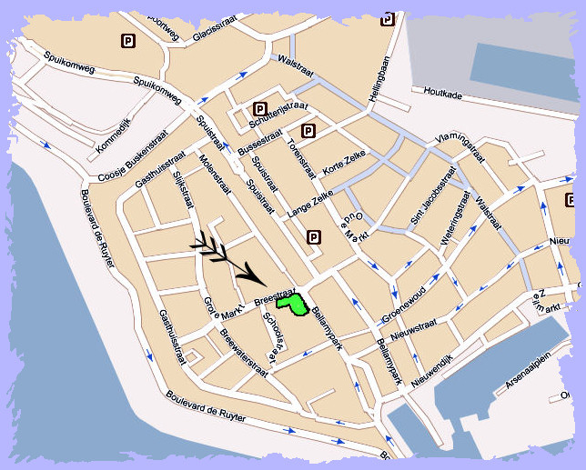

|
De Reptielenzoo Iguana vind u in het Centrum van Vlissingen Het adres is Bellamypark 31-35, 4381 CH, Vlissingen. Wanneer
u Vlissingen binnenrijdt volgt u de bordjes CENTRUM Volg deze en u rijdt er vanzelf langs. Voor parkeerplaatsen zie het kaartje... De Reptielenzoo is 20 min lopen vanaf TREIN STATION VLISSINGEN. Komt u met de bus, stap uit BUS HALTE CENTRUM |
|
 |